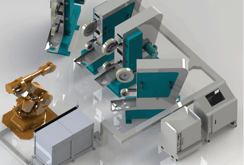

走进利迅达工业旅游，体验非凡的智能世界
来源：金石科技 日期：2013-12-26 点击：1525
11月20日上午，籍顺德成为全国唯一的智能制造试点2周年之际，国家工业与信息化部副部长杨学山来到顺德，听取了顺德在智能制造方面的新发展。杨学山给予顺德夸奖与鼓励的同时，也为顺德提出了众多指导意见。
“ 两化融合，首先要搞清楚目标是什么？”杨学山副部长视察了顺德“物联天下”。听取了以利迅达机器人为首的顺德机器人企业的工作汇报，做出了重要指示。
“我们的目标是智能制造要在国际竞争中力争上风，要在提高品质、降低成本上下功夫，要与企业转型升级结合起来，为创新型国家树立典范。目前的工业机器人和服务机器人的发展势头十分好。利迅达立足于打磨抛光表面处理这条路是走对了，将来有很大的发展空间。机器人集成应用有的门槛不高，将来也会面对竞争，要有自己的核心技术，运用现代科技，提高创新能力，要瞄准国际水平，领先对手，做国内第一、全球第一……”
利迅达机器人执行董事黎广信作为智能装备企业代表做工作汇报。
杨部长还听取了顺德区副区长刘怡对智能制造总体情况和智能制造产业基地的介绍。杨部长还就服务机器人的发展，智能电梯系统、智能停车系统等物联网应用产业和物联网下一步的方向作了指示。
顺德区长黄喜忠表态说，顺德将牢记中国唯一智能制造试点的责任，全力支持智能产业发展，落实工信部对顺德的要求。
上一篇： 机器人控制器
下一篇： KS-1000型工业机器人自动抛光机组